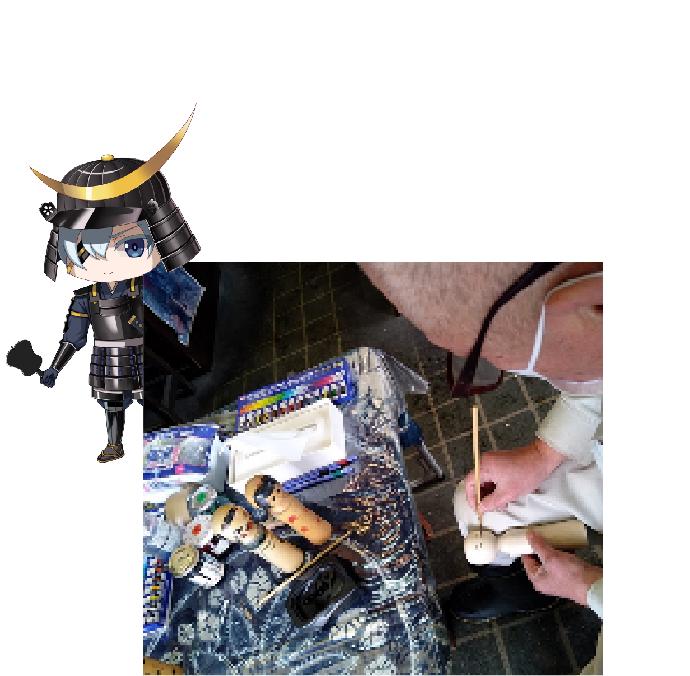

-
宮城県
伊達政宗が築いた仙台の街は、緑に包まれた「杜の都」。松島の絶景や仙台七夕まつりなど、心を動かす名所が点在します。震災を乗り越えた人々の優しさと誇り、そして牛たんやずんだなどの名物グルメ。宮城は東北の今と未来を感じる旅の拠点です。

お土産
-

九重
宮城名物「九重」は、やわらかなもち米を使った伝統の和菓子です。上品な甘さとしっとりした食感が特徴で、手土産や旅のお土産にぴったり。お茶うけにも喜ばれ、宮城ならではの味わいを気軽に楽しめる、老若男女に愛される逸品です.
-

くじらもなか
宮城名物「くじらもなか」は、かわいいくじらの形をしたもなかに、上品なあんが詰まったお菓子です。手軽に楽しめるサイズでお土産や手土産にぴったり。見た目も可愛く、家族や友人と一緒に宮城の味わいを気軽に楽しめる人気の和菓子です.
-

銀河のきらめき
宮城名物「銀河のきらめき」は、きらめくような見た目が美しい洋菓子です。サクサクの生地と上品なクリームの甘さが絶妙で、手土産や旅のお土産にぴったり。家族や友人と一緒に、宮城ならではの華やかで美味しい味わいを気軽に楽しめる人気の一品です.
観光地
-

にほんこけし館
宮城の「にほんこけし館」は、伝統的な木製人形・こけしの魅力を体験できるスポットです。職人の手仕事や歴史を学べる展示のほか、絵付け体験も楽しめます。親子で訪れても楽しく、宮城の文化と温かみを感じられる、思い出に残る観光地です.
-

保護猫シェルター こっちにおいで
宮城の「保護猫シェルター こっちにおいで」は、保護猫たちと触れ合える癒しのスポットです。かわいい猫たちとのふれあいやお世話体験ができ、猫好きにはたまらない場所。家族や友人と一緒に訪れて、心温まるひとときを楽しめる観光スポットです.
-

伊豆沼
宮城の「伊豆沼」は、渡り鳥の飛来地として知られる自然豊かな湖です。四季折々の美しい景色や、特に冬の白鳥の群れは圧巻。遊歩道や観察小屋からゆったりと野鳥観察が楽しめ、自然の息吹を感じながら心安らぐひとときを過ごせる、家族連れにもおすすめの観光スポットです。
体験
-

こけし絵付け体験
宮城の「こけし絵付け体験」では、伝統こけしに自分だけのデザインを描いて楽しめます。色や表情を自由に選べるので、世界にひとつだけのお土産作りにぴったり。親子や友人同士で体験すれば、楽しく思い出に残る、宮城ならではの文化体験が楽しめます.